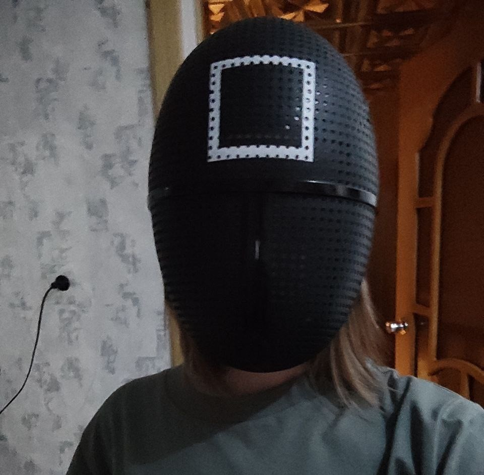
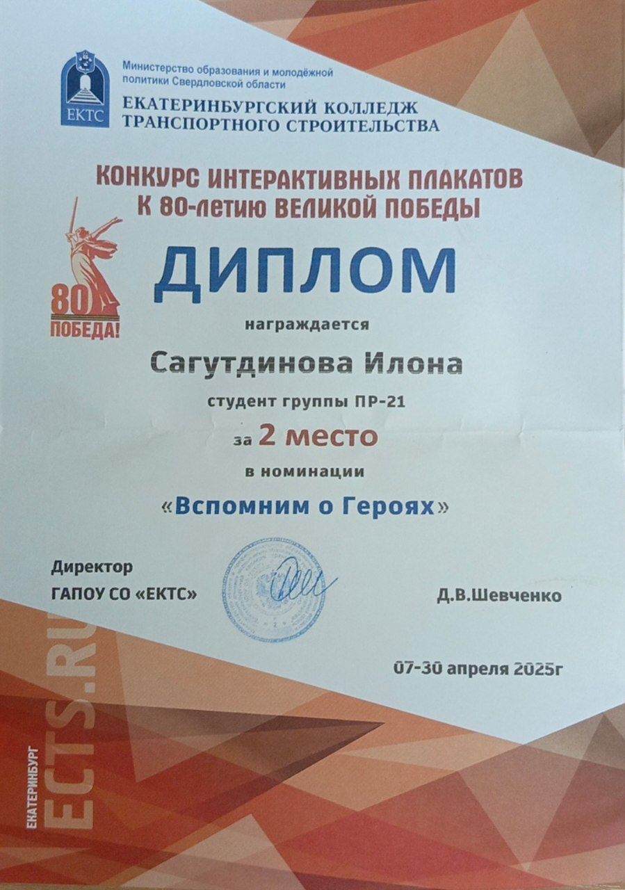
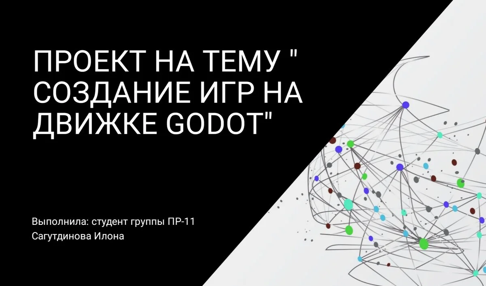

Министерство образования Свердловской области
ГАПОУ СО "ЕКТС"
Сагутдинова Илона Ильнаровна

Информационные системы и программирование
Группа: ПР-31

Информационные системы и программирование
Группа: ПР-31
Стремлюсь стать востребованным специалистом
Ответственность, целеустремленность, коммуникабельность
Перечень общих (ОК), профессиональных (ПК) и дополнительных профессиональных (ДПК) компетенций по специальности 09.02.07 "Информационные системы и программирование":

Индивидуальный проект на тему "Разработка игр на Godot"
